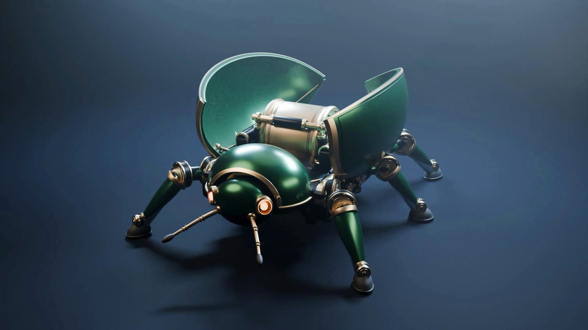
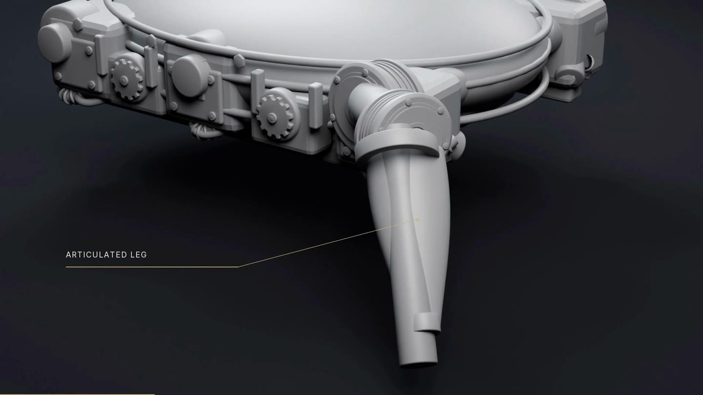
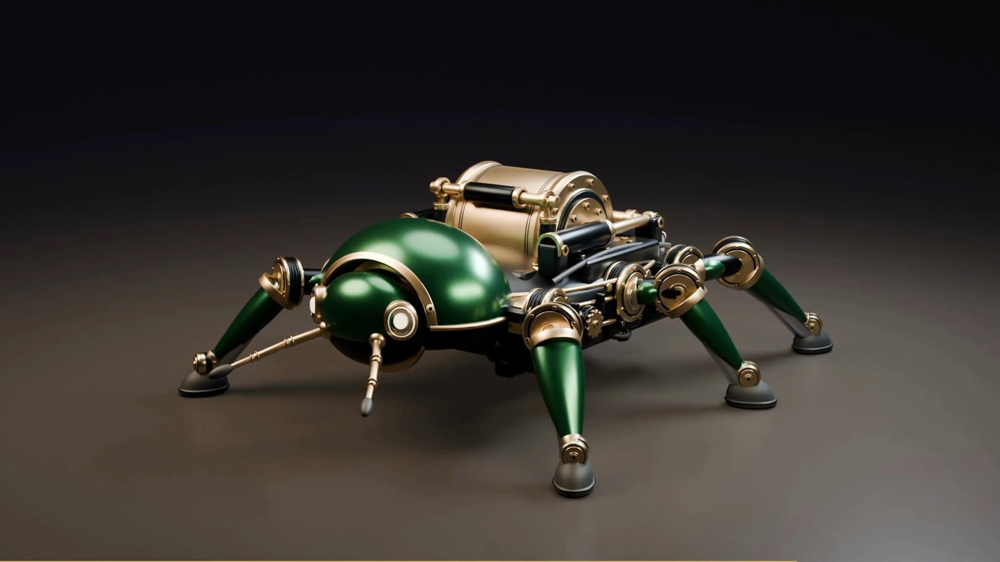
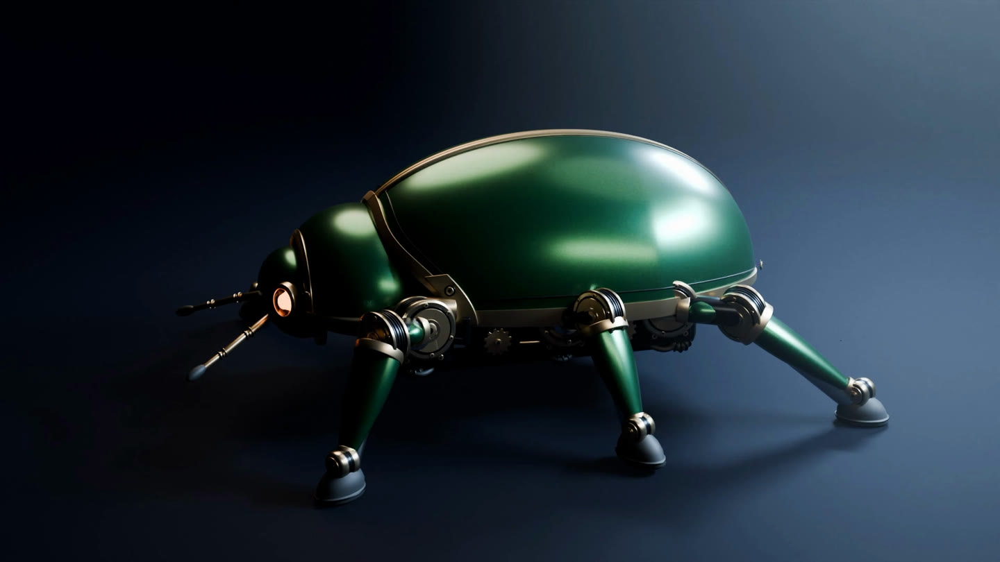

EMERALD
A mechanical beetle in emerald, champagne and graphite. Modelled, animated and rendered in Blender.
Watch the filmFrom a bare chassis to the first six-legged steps. 3 minutes, 22 seconds. English captions available.
Explore the mechanism.
Take control of Emerald. Rotate the beetle, open the shells and set the brass drum in motion.
Drag to orbit. Open the shells to reveal the motor. Pause at any angle.
Inside the carapace.
Six articulated legs. A brass drum. Two mirrored shoulder hinges. Every visible piece has a place.




Take Emerald with you.
Download the interactive GLB model, or embed the complete viewer in your own website.
Download the model GLB · 5 MBSee the embed example ↗
The interactive edition uses cool gunmetal joints. Its real-time lighting approximates the film’s studio finish.